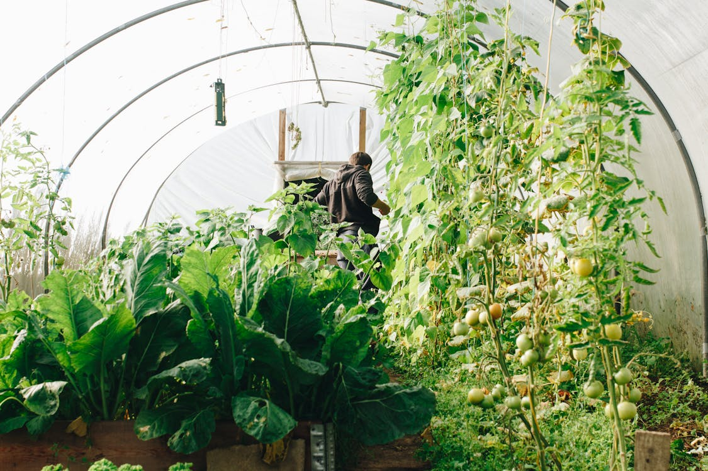
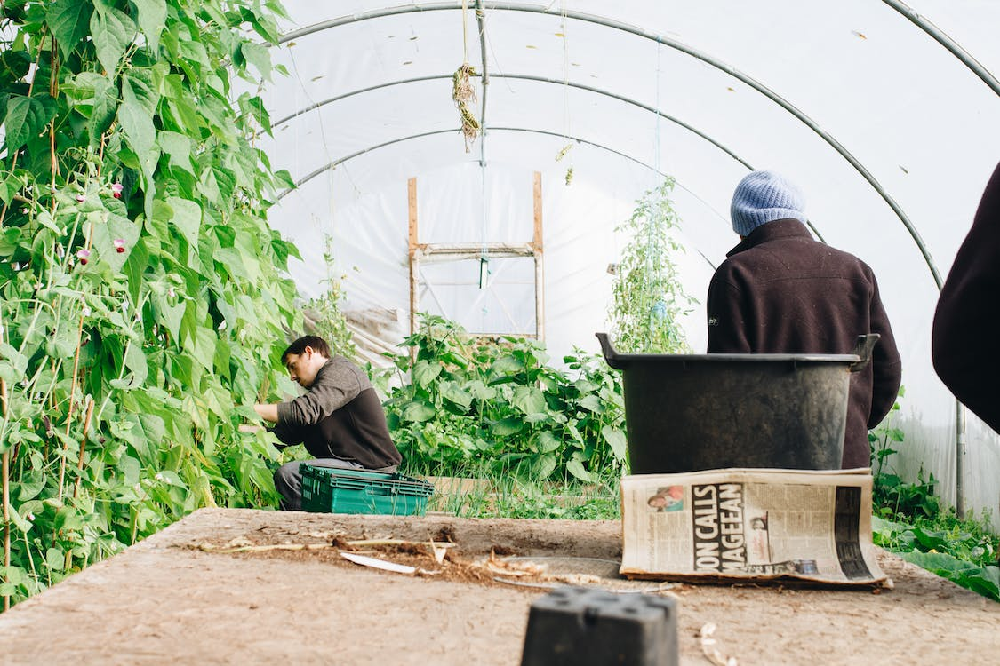

Welcome to Sprout & Grow
Raleigh, NC's premier destination for high-quality organic plants.
We specialize in high-quality organic plants. The nursery aims to provide customers with a diverse selection of meticulously nurtured plants that promote sustainable gardening practices. Sprout & Grow prioritizes transparency, integrity, and environmental stewardship, offering a range of educational resources and personalized support to empower customers in cultivating thriving organic gardens.
Our Mission
Sprout & Grow is dedicated to promoting sustainable gardening practices and empowering our community with high-quality organic plants.
Featured Plants
Explore our unique selection of organic plants, carefully nurtured to add life and color to your garden. We offer the largest variety of plants in North Carolina!
Sustainability Efforts
Our eco-friendly practices extend beyond organic gardening. Discover how we reduce our ecological footprint and how you can contribute.
Join Our Community
Connect with fellow gardening enthusiasts. Participate in our workshops and share your gardening adventures on social media.
Ready to join our community of passionate gardeners?